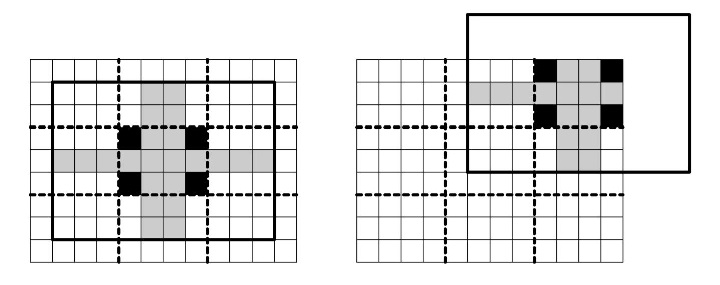

有一个 $\left( w n \right) \times \left( h n \right)$ 的拼图，由 $n^2$ 个 $w \times h$ 个碎片拼成。
每个碎片由一个 $w \times h$ 的基础矩形改造而来，但要遵循如下规则：
具体地，下图表示一个碎片必须包含的单元格 (用黑色表示) 和可能包含的单元格 (用灰色表示)：
上图对应 $w = 4, h = 3, n = 3$。可以证明，每个碎片一定包含于一个以「它对应的 $w \times h$ 基础矩形」为中心的 $\left( 3 w - 2 \right) \times \left( 3 h - 2 \right)$ 的矩形网格中。因此，输入中将用这种格式来描述碎片。
现在给定若干个碎片，请你来完成拼图。
第一行包含三个正整数 $k, w, h$ ($k \in \left\{ 1, 4, 9, 16 \right\}; w, h \in \left\{ 3, 4, 5 \right\}$)，分别表示碎片的个数，基础矩形的宽度和高度。这里令 $n = \sqrt k$ 表示这些碎片要分成几行几列。
接下来描述这 $k$ 个拼图。对每个拼图，共 $3 h - 2$ 行，每行 $3 w - 2$ 个字符，用大写英文字母标号 (第一片为 $\texttt A$，第二片为 $\texttt B$，以此类推)，其中字母表示碎片包含的单元格，. 表示碎片不包含的单元格。
第一行输出两个整数 $w \cdot n, h \cdot n$，表示最终拼图的宽度和高度。
接下来 $h$ 行，构成一个 $h$ 行 $w$ 列的字符点阵，表示将这些拼图完美拼接起来的结果。
如果有多组拼接方案，输出任意一组均可。
这道题就是搜搜搜~
特判掉 $n = 1$，由定义可以立即确定每块拼图是否在左边界、右边界、上边界以及下边界。因此可以唯一确定拼图的左上角、右上角、左下角和右下角。
然后，对于两块拼图，我们需要检验它们能是否左右拼接或上下拼接。
由于题目中的条件只有单连通，而单连通的区域也是可以很 "绕" 的，因此我们放宽条件，如果两块拼图相邻摆着没有公共单元格 (即不相交)，则就认为是可能可以左右 (上下) 拼接的。
然后就可以进行搜索了 —— 维护出每个位置可以放哪些碎片，每次找到可行碎片最少的位置填入即可。(好像不优化直接搜也能过)
下面的代码好像直接搜就能搜到解，连回溯都不需要 (吐)
#include <bits/stdc++.h>
#define popc __builtin_popcount
#define ctz __builtin_ctz
using std::cin;
using std::cout;
typedef unsigned int u32;
int n, R, C;
int g[4][4];
char s[100];
char mat[100][100];
int hor[16][16], ver[16][16];
u32 can[4][4];
bool avai[16];
struct puzzle {
u32 buf[13], *p;
bool Lb, Rb, Ub, Db;
friend std::istream & operator >> (std::istream &in, puzzle &B) {
int i, j; B.p = B.buf + R - 1;
for (i = 0; i < 3 * R - 2; ++i) {
in >> s, B.buf[i] = 0;
for (j = 0; j < 3 * C - 2; ++j) B.buf[i] |= u32(s[j] != 46) << j;
}
return in;
}
void calc_boundary() {
int i; u32 S = 0, T = 0, flat_row = ~(-1 << C) << (C - 1);
for (i = 0; i < R - 1; ++i) S |= p[~i], T |= p[R + i];
Ub = !S && *p == flat_row,
Db = !T && p[R - 1] == flat_row;
for (S = 0, T = -1, i = 0; i < R; ++i) S |= p[i], T &= p[i];
Lb = !(S & ~(-1 << (C - 1))) && T >> (C - 1) & 1,
Rb = !(S & (-1 << (2 * C - 1))) && T >> 2 * (C - 1) & 1;
}
} a[16];
bool check_and_print() {
int i, u, v, r, c, fr, fc; u32 S, mask = 0;
for (i = 0; i < n * R; ++i) memset(mat, 0, sizeof mat);
for (r = 0; r < n; ++r)
for (c = 0; c < n; ++c) {
i = g[r][c];
if (mask >> i & 1) return false;
mask |= 1 << i;
for (u = 1 - R; u < 2 * R - 1; ++u)
for (S = a[i].p[u]; S; S &= S - 1) {
v = ctz(S) - (C - 1), fr = r * R + u, fc = c * C + v;
if ((u32)fr >= (u32)n * R || (u32)fc >= (u32)n * C || mat[fr][fc]) return false;
mat[fr][fc] = 65 + i;
}
}
for (i = 0; i < n * R; ++i) cout << mat[i] << '\n';
return true;
}
bool check_horizontal(const puzzle &L, const puzzle &R) {
int i;
if (L.Rb || R.Lb) return false;
for (i = 0; i < ::R; ++i) if (L.p[i] & R.p[i] << C) return false;
return true;
}
bool check_vertical(const puzzle &U, const puzzle &D) {
int i, j, u[5] = {0}; u32 S;
if (U.Db || D.Ub) return false;
for (i = 0; i < 2 * R - 1; ++i)
for (S = U.p[i]; S; S &= S - 1)
if (u32(j = ctz(S) - (C - 1)) < (u32)C)
u[j] |= 1 << i;
for (i = R - 1; i > -R; --i)
for (S = D.p[i]; S; S &= S - 1)
if (u32(j = ctz(S) - (C - 1)) < (u32)C)
if (u[j] >> (i + R) & 1) return false;
return true;
}
inline void update(int r, int c) {
if ((u32)r >= (u32)n || (u32)c >= (u32)n || ~g[r][c]) return;
for (int i = 0; i < n * n; ++i) if (can[r][c] >> i & 1)
if ((c && ~g[r][c - 1] && !hor[ g[r][c - 1] ][i])
|| (c < n - 1 && ~g[r][c + 1] && !hor[i][ g[r][c + 1] ])
|| (r && ~g[r - 1][c] && !ver[ g[r - 1][c] ][i])
|| (r < n - 1 && ~g[r + 1][c] && !ver[i][ g[r + 1][c] ]))
can[r][c] &= ~(1 << i);
}
bool dfs(u32 mask) {
static int stamp = 0;
int i, j = 1, r, c, best = INT_MAX; u32 S, T, _can[4][4];
// fprintf(stderr, "dfs [time = %d] (current mask = %u, c = %d)\n", ++stamp, mask, popc(mask));
if (!mask) return check_and_print();
for (r = 0; r < n; ++r)
for (c = 0; c < n; ++c)
if (!~g[r][c] && popc(can[r][c]) < best) best = popc(can[r][c]), j = r * n + c;
if (assert(~j), !best) return false;
r = j / n, c = j % n, mask &= ~(1 << j), memcpy(_can, can, 64);
for (S = can[r][c]; S; S &= S - 1) {
g[r][c] = ctz(S), T = ~(S & -S);
for (i = 0; i < 4; ++i) for (j = 0; j < 4; ++j) can[i][j] = _can[i][j] & T;
update(r, c - 1), update(r - 1, c), update(r, c + 1), update(r + 1, c);
if (dfs(mask)) return true;
}
return g[r][c] = -1, memcpy(can, _can, 64), false;
}
int main() {
int i, j; u32 LL = 0, RR = 0, UU = 0, DD = 0, ALL = 0;
std::ios::sync_with_stdio(false), cin.tie(NULL);
cin >> n >> C >> R, n = sqrt(n);
cout << n * C << ' ' << n * R << '\n';
if (n == 1) {
memset(s, 65, n * C);
for (i = 0; i < n * R; ++i) cout << s << '\n';
return 0;
}
memset(g, -1, sizeof g);
for (i = 0; i < n * n; ++i) {
cin >> a[i], a[i].calc_boundary();
assert(a[i].Lb + a[i].Rb + a[i].Ub + a[i].Db < 3);
if (a[i].Lb && a[i].Ub) assert(!~g[0][0]), g[0][0] = i;
else if (a[i].Rb && a[i].Ub) assert(!~g[0][n - 1]), g[0][n - 1] = i;
else if (a[i].Lb && a[i].Db) assert(!~g[n - 1][0]), g[n - 1][0] = i;
else if (a[i].Rb && a[i].Db) assert(!~g[n - 1][n - 1]), g[n - 1][n - 1] = i;
else avai[i] = true;
}
assert(~g[0][0] && ~g[0][n - 1] && ~g[n - 1][0] && ~g[n - 1][n - 1]);
for (i = 0; i < n * n; ++i)
for (j = 0; j < n * n; ++j) if (i != j)
hor[i][j] = check_horizontal(a[i], a[j]), ver[i][j] = check_vertical(a[i], a[j]);
for (i = 0; i < n * n; ++i) if (avai[i]) {
ALL |= 1 << i;
if (a[i].Lb) LL |= 1 << i;
else if (a[i].Rb) RR |= 1 << i;
else if (a[i].Ub) UU |= 1 << i;
else if (a[i].Db) DD |= 1 << i;
}
for (i = 0; i < n; ++i) for (j = 0; j < n; ++j)
can[i][j] = !j ? LL : j == n - 1 ? RR : !i ? UU : i == n - 1 ? DD : ALL, update(i, j);
dfs(~(-1 << (n * n - 1) | 1 << n * (n - 1) | 1 << (n - 1) | 1));
return 0;
}
坑1：判断 $A, B$ 能否左右拼接时不能使用「判断每一行 $A$ 的最右边格子的右边是否是比 $B$ 的最左边格子」的方法，因为可能存在类似下列情形：
AAAAABBBBB AAABAABBBB AAABBAABBB AAAABBABBB AAAAABBBBB
坑2：在回溯时 (如果有回溯) 不要忘记复原每个位置可以放置的碎片集合，以免提前结束。